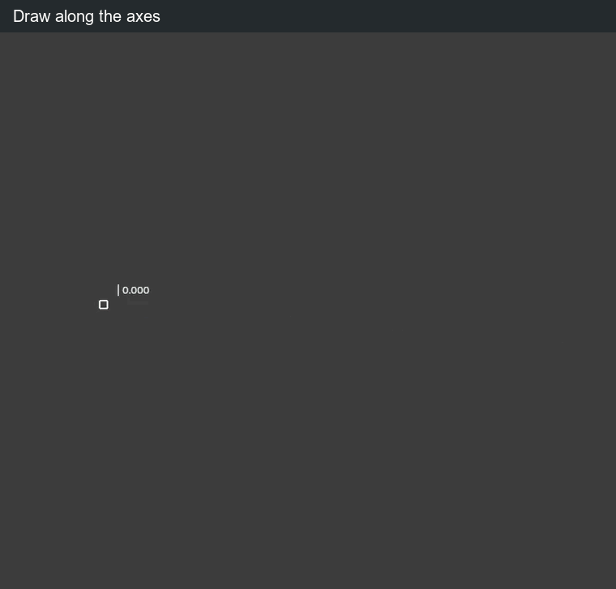
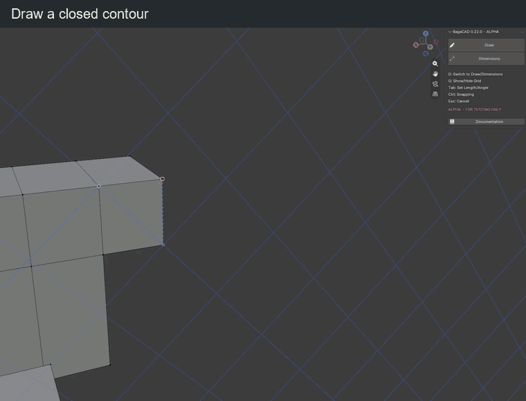

Draw
Place a start point, then add segments. On a face, hold Ctrl when clicking to draw instead of extruding; keep away from a guide handle.
| Key or gesture | Action |
|---|---|
| Left click | Place the start point or confirm the next segment |
| Right click | Start a new chain |
| Ctrl + click inside a face | Start drawing on the face |
| X / Y / Z | Lock the corresponding axis; press again to release |
| Shift + X / Y / Z | Lock to YZ / XZ / XY; press again to release |
| Type digits | Set the active length or angle value |
| Tab | Switch between length and angle input |
| Click / Enter | Confirm the segment |
| Backspace | Delete a digit; outside input, cancel the unfinished chain |
| Ctrl, held | Disable mesh, grid and guide snapping; release to restore snapping |
| Ctrl + Z | Undo a validated edit; discard any unfinished guide/grid setup first |
| Esc | Clear input, setup or selection; otherwise finish the tool |
| Enter without input or selection | Finish the tool |
Precision

A typed length fixes distance while the direction follows the mouse. A typed angle fixes the angle while the length changes. Enter both to fix both. Tab alone selects a field without locking it.
Drawing snapping is on by default. Hold Ctrl to disable it; release Ctrl to restore it. Explicit axis/plane locks and typed dimensions stay active without Ctrl. Hovering can still acquire construction guides and temporary references.
Snap targets include vertices, midpoints, edges, faces, construction guides and grid nodes. With a fixed length, any snap target can choose the direction; the segment keeps its entered length. Displayed measurements follow the scene units. Drawing input uses Blender units; angles use degrees.
In empty space without a snap, grid plane or explicit constraint, the first point uses a view-parallel plane through the 3D cursor. Each following segment uses a view-parallel plane through its starting point instead.
For circles, rectangles and parallel edges, see Shapes & offsets.
Faces

Close a flat contour to fill it. Draw between face borders to cut a face. Crossings split edges; overlapping segments merge.
To fill a missing flat region, retrace one of its border edges. Existing coplanar faces are not covered. A diagonal across an empty square can fill both sides.
Erase and extend edges
| Key or gesture | Action |
|---|---|
| Hold Shift + right mouse, then sweep | Erase visible edges under the cursor |
| Release right mouse or Shift | End the stroke; one undo step for the whole sweep |
| Esc / Ctrl + Z during the stroke | Cancel the sweep and restore the mesh |
| Hold Alt over an edge | Preview extension from the endpoint nearest the cursor |
| Alt + left click on the preview | Extend to the first real vertex, edge or face target |
| Release Alt | Hide the extension preview |
Erasing B–C in A–B–C–D keeps A–B and C–D. A divider between coplanar faces is dissolved while preserving the surface. Erasing a boundary or an edge between non-coplanar faces also removes its attached faces.
Extension joins the target in 3D; a screen-only crossing is not enough. Inside a face plane it targets real boundaries; a transverse arrival into a face makes a local cut. Without a visible target, clicking does nothing.
Alt priority: a hovered guide moves first; otherwise an edge can extend, while a face interior keeps coplanar extrusion. In Rectangle, Alt centres the shape.
Navigation
| Key or gesture | Action |
|---|---|
| Middle mouse / Shift + middle mouse / wheel | Orbit / pan / zoom with the default Blender keymap |
| Numpad during a segment | Enter numbers |
| Numpad before the first point | Use Blender view shortcuts |
BagaCAD shortcuts can be changed in the preferences; navigation uses Blender's keymap.